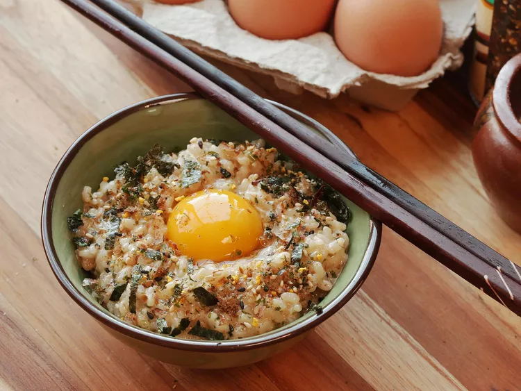

Tamago Kake Gohan
A Japanese comfort food.
As simple as it sounds, this recipe makes for a quick breakfast or a great late night snack.
Ingredients
- 1 cup cooked white rice
- 1 large egg
- 1/2 teaspoon soy sauce
- A pinch of salt
Recipe directions
- Place rice in a bowl and make a shallow indentation in the center.
- Break the egg in the center of the bowl.
- Season with soy sauce and salt.
- Stir with chopsticks to incoprorate the egg.